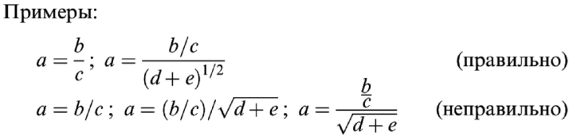

Правила для авторов
Шаблоны и файлы для скачивания
- Принятые сокращения названий некоторых журналов (DOCX)
- Приложение 1. Направление от организации (DOCX)
- Приложение 2. Лицензионный договор (DOCX)
- Шаблон для набора химических формул (ChemDraw)
- Стиль для оформления ссылок при помощи программы EndNote (ens)
- Стиль для оформления ссылок при помощи программы Mendeley (csl)
Предварительная заявка
В обязательном порядке необходимо заранее представить в редакцию предварительную заявку, включающую:
- название обзора;
- имена авторов;
- список организаций;
- расширенную аннотацию (описание потенциальной востребованности данного обзора для широкой аудитории журнала, аргументация того, что обзор будет активно чи¬таться и цитироваться);
- оглавление с кратким комментарием и ориентировочным числом страниц по каждому разделу;
- предположительное число ссылок;
- ориентировочное число страниц формата А4 (13 шрифт, 1.5 интервал);
- ориентировочный срок подачи материала;
В случае, если авторы в течение последних 10 лет публиковали обзоры в "Успехах химии", необходимо указать их название и число цитирований, которое каждый из них набрал на данный момент. Цитирование можно увидеть на сайте журнала или WoS. Просим отметить в заявке, если предыдущие публикации являются активно цитируемыми (имеют более 7 цитирований в год). Редколлегия настоятельно рекомендует приступать к подготовке обзора только после согласования предварительной заявки.
Редколлегия журнала готова рассмотреть в ускоренном режиме рукописи, прошедшие рецензирование в любом другом международном журнале уровня Q1. Рукопись предоставляется в переработанном варианте с учетом замечаний рецензентов (к переработанному варианту обзора должен также прилагаться файл с замечаниями рецензентов и подробными ответами на них, в pdf-формате обзора внесенные изменения должны быть выделены цветом).
Редколлегия оставляет за собой право направить рукопись на дополнительное рецензирование, если представленные отзывы недостаточно информативны.
Общие требования
Журнал публикует обзоры по актуальным проблемам химии и смежных с нею наук с критическим анализом литературных данных, опубликованных за последние 3–15 лет. Предпочтение отдается проблемно-аналитическим обзорам, в которых высказывается собственная позиция авторов по рассматриваемому вопросу, а также обзорам, посвященным новым перспективным областям химии, инициирующим дальнейшие исследования. Авторы должны быть специалистами в рассматриваемой области, что должно быть подтверждено наличием их собственных публикаций по данной теме в рейтинговых журналах. Собственные работы авторов должны быть представлены наравне с работами других ученых мирового научного сообщества, внесших заметный вклад в развитие данной области химии. Обзор должен быть написан хорошим языком и не содержать базисных сведений по химии, которые рассматриваются в учебниках, известных монографиях и других изданиях, ¬обобщающих фундаментальные сведения по конкретным областям химии.
Настоятельно обращаем внимание авторов на то, что английская версия журнала является переводом cover-to-cover текстов русской версии. По этой причине редакция не принимает стилистическую правку текстов после публикации русской версии. Убедительная просьба тщательно подготавливать русский вариант (в частности, внимательно вычитывать корректуры) Вашего обзора. Также просим учесть, что корректура английского текста высылается авторам для проверки только один раз и на вычитку предоставляется не более 5 календарных дней. Авторы могут представить свой вариант английского перевода (о чем должны сообщить в редакцию при принятии обзора к публикации) или же изначально представить обзор на английском языке приемлемого уровня (уровень оценивается переводчиком журнала, лицензированным английскими партнерами журнала). Поскольку обзоры часто претерпевают большие изменения при переработке в соответствии с замечаниями рецензентов, а также при редактировании, не стоит представлять в редакцию сразу и русскую и английскую версии обзоров. Авторы могут представить свой перевод русской версии только после согласования с редакцией.
Оплата
Публикация в журнале является бесплатной.
Цитрование
Объем материала, взятого из одной конкретной публикации, не должен превышать 5% представляемого обзора и 50% цитируемой работы. Отсутствие обзоров по выбранной теме в отечественной литературе не может быть обоснованием для публикации представляемого обзора.
Все рукописи проходят проверку на заимстование из ранних публикаций. Журнал придерживается международных стандартов издательства, которые запрещают копирование, а также близкие перефразирования (вставка вводных слов, например) уже опубликованных работ, в том числе собтвенных. Текст обзоров должен быть новым, оригинальным, нести свежие идеи, анализ и выводы.
Обзор представляет собой анализ уже опубликованных данных и не может содержать неопубликованные ранее экспериментальные результаты.
Рецензирование
Решение о публикации принимается на основании обязательного рецензирования. Журнал предоставляет авторам несколько вариантов рецензирования:
1. ДАР. Вариант двойного (двусторонне) анонимного рецензирования. В этом случае ни авторы, ни рецензенты не знают имени друг друга. 2. АР. Вариант (односторонне) анонимного рецензирования. В этом случае авторы не знают имени своих рецензентов. 3. ОР. Открытое рецензирование. Краткое описание рукописи (название, авторы, аннотация) по решению авторов будет выложено в открытом доступе в разделе Открытое рецензирование, рукопись будет отправлена на рецензию ученым, объявившим желание стать рецензентами данного манускрипта.
При написании статей необходимо заранее продумать какой вариант рецензирования Вас устраивает и в случае выбора ДАР избегать в тексте оборотов, указывающих на авторство (напр., как было нами показано в работе такой-то…).
Выбранный вариант рецензирования можно указать в сопроводительном письме при подаче документов. В случае отсутствия четкой информации со стороны автора автоматически используется вариант АР.
Необходимые документы
Для рассмотрения обзора авторам необходимо предоставить в редакцию следующие документы:
1) полную версию обзора со всем графическим материалом и литературой в форматах DOC(DOCX) и PDF (для рецензентов), все таблицы и рисунки необходимо разместить по мере упоминания их в тексте;
2) направление от каждой российской организации, заявленной в шапке обзора, с подписью и печатью (может быть направлено по электронной почте в отсканированном виде). Требование обусловлено российским законодательством, по которому авторскими правами на публикацию также обладают организации, в которых данная работа была выполнена (Приложение 1);
3) подписанный всеми авторами лицензионный договор с журналом (может быть направлен по электронной почте в виде скана заполненного и подписанного живыми подписями документа, НО НЕ в виде файла со вставленными копиями подписей, каждый автор может заполнить и подписать свой экземпляр, если нет возможности собрать все подписи на одной бумаге, см. Приложение 2). Русский вариант подписывается русскоязычными авторами. Иностранные авторы могут использовать лицензионный договор на английском языке, находящийся на сайте английской версии журнала Russian Chemical Reviews (https://www.turpion.org/php/homes/pa.phtml?jrnid=rc&page=auth);
4) сведения обо всех авторах обзора на русском и английском языках с указанием их полных ФИО, должностей, ученых степеней и научных званий, областей научных интересов, мобильных телефонов (для экстренной связи) и адресов электронной почты, а также ORCID, при наличии заполненных аккаунтов;
5) название и адрес рабочей организации для каждого автора на русском и английском языках в соответствии с официальным бланком (уставом) организации. Соответствие представленного названия уставным документам организации крайне важно для правильной приписки данной публикации данной организации в базах WoS, Scopus, РИНЦ и т.д.;
6) название обзора, аннотацию, ключевые слова и оглавление на английском языке;
7) ключевые слова на русском языке;
8) данные 3–4 желательных рецензентов (полные ФИО, место работы, телефон, адрес электронной почты); при необходимости могут быть указаны нежелательные рецензенты. Для принятых к публикации обзоров необходимо пре¬доставить в редакцию:
1) все рисунки и схемы в оригинальном формате (JPG, TIF, CDX); 2) графический абстракт, представляющий собой автор¬ский цветной рисунок на английском языке, не публиковавшийся ранее, в формате TIF с разрешением 600 dpi размером 50х50 мм (не менее 1600х1600 пикселей); 3) разрешение на воспроизведение всех рисунков, опубликованных ранее в международных издательствах (см. раздел Рисунки). Для англоязычной версии журнала необходимо предоставить перевод на английский язык редко используемых и узкоспециализированных терминов.Подача материалов
Все материалы могут быть присланы по электронной почте (russchemrev@yandex.ru; uspkhim@gmail.com, ukh@list.ru) или загружены на сервер с помощью Manuscript Processing System (http://www.uspkhim.ru, раздел "Процесс публикации статьи").
Для публикации в журнале не требуется представления от члена РАН.
Структура публикации
Текст обзора начинается с заглавия, далее следуют инициалы и фамилии авторов, полное название научного учреждения — основного места работы каждого автора, его почтовый адрес с индексом почтового отделения. Далее приводятся краткая аннотация, ключевые слова и полное оглавление. Нумерация разделов проводится по принципу
1. 1.1. 1.1.1. и т.д.
Заголовки разделов в оглавлении должны точно соответствовать таковым в тексте. 1. Введение. Во введении необходимо четко определить круг рассматриваемых в обзоре вопросов и временной период. Здесь же необходимо отметить, имеются ли в мировой литературе последних 10 лет обзоры по аналогичной тематике и если имеются, то перечислить их и указать, каковы принципиальные отличия настоящего обзора от уже имеющихся. Цель Введения – привлечь читателя тем, что он может здесь найти в отличие от других подобных публикаций.
2. После введения необходимо поместить в алфавитном порядке все сокращения, математические и физические символы, используемые в тексте. В тексте необходимо расшифровать каждое сокращение и символ после первого его употребления. Исключение составляют общепринятые аббревиатуры (РСА, ТГА, ДМФА, ДНК, РНК и т.д.). Один и тот же символ не используется для разных характеристик, одинаковые характеристики не обозначаются различными символами. Сокращение, которое используется менее трех раз, не вводится.
3. Заключение обзора должно представлять собой детализированный вывод о состоянии данной области науки на сегодняшний день с кратким описанием достижений, недостатков и перспектив будущего развития, и занимать не менее 2/3 страницы.
4. В связи с участием журнала в системе Crossref, необходимо тщательно выверить список литературы. В списке цитируемой литературы одной ссылке должна соответствовать только одна статья.
Подача материалов
Все материалы могут быть присланы по электронной почте (russchemrev@yandex.ru; uspkhim@gmail.com, ukh@list.ru) или загружены на сервер с помощью Manuscript Processing System (http://www.uspkhim.ru, раздел "Процесс публикации статьи").
Для публикации в журнале не требуется представления от члена РАН.
Правила оформления материалов
Обзор должен быть написан четко, логично структурирован и тщательно отредактирован. Дублирование материала в таблицах, на рисунках и в тексте позволительно только в силу необходимости при анализе данных.
Все страницы следует пронумеровать. Объем обзора не должен превышать 100 страниц формата А4 (13 шрифт, 1.5 интервал). Редакция оставляет за собой право осуществлять редактирование текста. Для рассмотрения обзоров объемом, превышающим 100 стр., требуется дополнительное согласование с редколлегией журнала.
Оформление текста
Оформление текста Файлы должны быть названы с использованием только латинских букв. Названия файлов не должны превышать 8 символов. При применении программ-архиваторов файлы должны иметь расширения этих программ (ZIP, ARJ, RAR и т.д.). Недопустимо предоставление в редакцию самораспаковывающихся EXE-файлов.
Не должно быть страниц без ссылок. Ссылки в тексте приводятся в виде верхнего индекса и нумеруются в порядке их упоминания в тексте. При этом необходимо учитывать, что ссылка в тексте на рисунок или таблицу автоматически включает в данное место всю последовательность ссылок в рисунке или таблице.
Все численные данные должны сопровождаться ссылками или фразой "по расчету авторов на основании данных работы...". Размерности всех физических величин выражаются в международной системе СИ. В десятичных дробях целая часть от дробной отделяется точкой, а не запятой. Составные размерности приводятся в виде произведения: моль.л–1, Дж.K–1.моль–1 и т.д.
Для полных названий химических соединений следует пользоваться номенклатурой, рекомендуемой ИЮПАК. Для обозначения химических соединений или заместителей в тексте обзора (за исключением аннотации) можно пользоваться общепринятыми аббревиатурами: пиридин — Py, диметилсульфоксид — ДМСО (DMSO), диметилформамид --- ДМФА (DMFA), тетрагидрофуран — ТГФ (THF), ацетилацетонат — acac, бис(дифенилфосфино)этан — dppe, алкил — Alk, арил — Ar, гетарил --- Het, галоген — Hal, метил — Me, этил — Et, пропил — Pr, изопропил — Pri, бутил --- Bu, трет-бутил --- But, аминокислоты — Gly, Ala, Val и т.п.
Стандартные физико-химические методы анализа и связанные с ними термины обозначаются в тексте общепринятыми аббревиатурами из заглавных букв русского или английского алфавита (единообразно по всему обзору): ВЭЖХ — высокоэффективная жидкостная хроматография, КССВ — константа спин-спинового взаимодействия, ЯМР — ядерный магнитный резонанс, СТС --- сверхтонкая структура и т.п. Все используемые авторами нестандартные обозначения и сокращения поясняются в тексте при первом упоминании и собираются в списке сокращений.
Математические формулы Математические уравнения начинаются с красной строки и нумеруются арабскими цифрами в круглых скобках у правого края страницы. Следует по возможности избегать громоздких математических обозначений и применять, например, дробные показатели степени вместо корней или символ "exp" — для экспоненциальной зависимости. Простые дроби в математических уравнениях оформляются как прямые, косые дроби используются только в сложных дробях и при включении формулы в текст.
Оформление таблиц
Каждая таблица в подписи должна иметь ссылку на исходные данные, если она не включает отдельной колонки со ссылками. Если таблица не помещается на вертикальном листе, допускается развернуть ее на горизонтальный. Необходимо строго следить за выравниванием горизонтальных строк и вертикальных столбцов в таблице. Для выравнивания столбцов пользоваться исключительно табулятором (ни в коем случае — пробелами).
Не следует включать в таблицы столбцы и строки, состоящие из одинаковых значений (т.е. из значений, не меняющихся от опыта к опыту или от строки к строке). Эти случаи следует особо оговорить в Примечании к таблице. Для нумерации сносок в таблице применяются латинские буквы, которые должны быть расположены в таблице в соответствии с алфавитным порядком (при чтении по горизонтали).
Следует четко различать случаи, когда в ячейках таблицы отсутствуют данные: если имеется в виду отсутствие данных, ставится прочерк, а если принципиально невозможно их получить, остается пустое место.
Химические формулы
Для набора химических формул желательно использовать программу ChemDraw (см. шаблон).
Формулы соединений, упоминаемых более одного раза, обозначаются арабскими цифрами (жирным шрифтом). Нумерация соединений должна соответствовать порядку их упоминания в тексте и на схемах (по возрастающей и без пропусков). Каждое химическое соединение может иметь только один номер, и наоборот, каждому номеру должно соответствовать лишь одно соединение. При первом упоминании приводится полное название соединения по номенклатуре ИЮПАК, а обозначение дается в скобках. Далее можно пользоваться кратким названием с шифром соединения без скобок. Например, в первый раз нужно написать 2-метил-4-фенилтиофен (3), далее — тиофен 3. При сочетании цифр с буквенными индексами используются буквы латинского алфавита. Например, спирт 14a, тозилат 14b, ксанто¬генат 14c.
Рисунки
Каждый рисунок в подписи должен содержать ссылку на оригинал и информацию о разрешении на воспроизведение. Для получения разрешения можно напрямую обратиться в соответствующее издательство или воспользоваться информацией нашего английского соиздателя IOP Publishing: IOPP is a signatory to the STM Permission Guidelines, which allow free reuse of small numbers of figures or portions of text in articles published by co-signatories. The STM Permission Guidelines can be found here: -http://www.stm-assoc.org/copyright-legal-affairs/permissions/permissions-guidelines/
Запрос необходимо делать для воспроизведения в журнале Russian Chemical Reviews издательства Institute of Physics of London Publishing (IOP Publishing).
Если рисунки или графики сделаны самими авторами на основании данных, опубликованных в ранних статьях, то это следует пояснить в подписи к рисунку/графику: "Рисунок/график сделан авторами обзора на основании данных публикаций (номер ссылки)".
Электронная версия журнала выходит в цвете, печатный вариант — в черно-белом исполнении. Рисунок должен обеспечивать ясность передачи всех деталей. Минимальный размер рисунка 100х170 мм. Следует учесть, что рисунки и схемы могут быть уменьшены при верстке, поэтому они не должны быть перегружены информацией и иметь части сильно различные по масштабу.
Обозначения на рисунках даются в русской и латинской транскрипции. Фотографии должны сканироваться, сохраняться и обрабатываться только в формате TIF с разрешением 600 dpi при размере 80х80 мм (256 оттенков серого либо цветной вариант). Минимальный формат фотографий 9х12, желательный — 13х18, максимальный — 19х24 см. На фотографиях должен быть приведен масштаб. Следует иметь в виду, что фотографии используются для набора без перефотографирования, ретуширования и т.п., поэтому автор должен позаботиться об их хорошем качестве. Фотографии плохого качества и ксерокопии фотографий не принимаются. Следует избегать громоздких надписей на рисунках. Графики желательно приводить в цвете. Рисунки, не обсуждающиеся в тексте, не приводятся.
Новости